o TechLearn tem funcionamento gratuito para a todos os cursos básicos e intermediáros, comece a agora mesmo a aprender clicando em saiba mais! Saiba mais ...
Assinando o TechLearn + além de nos ajudar a manter o projeto, você terá a acesso a conteúdos extras, cetificados e suporte de nossos profissionais. Saiba mais ...

TechLearn Business é nosso modelo de assinatura dedicado a empresas, com cursos focados no iníco do mercado de trabalho para jovens. Saiba mais ...